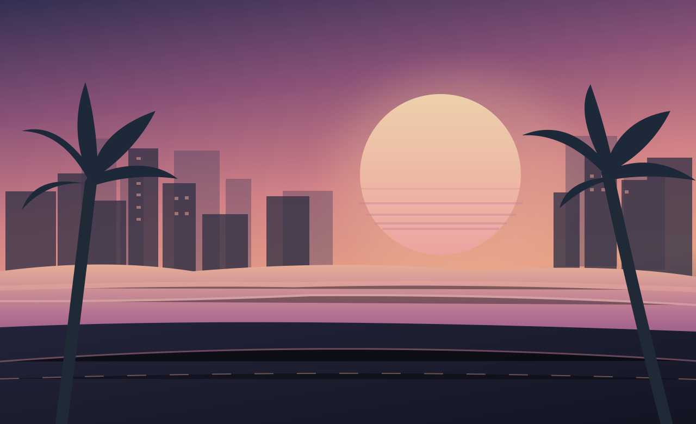

✳ OFFICIAL ROCKSTAR UPDATE01 / FEATURED
OCTOBER 15, 2026 · ROCKSTAR GAMES
THE LAUNCH
TRAILER IS HERE.
Rockstar revealed a new GTA VI launch trailer, bringing Jason, Lucia, and Leonida back into the spotlight.